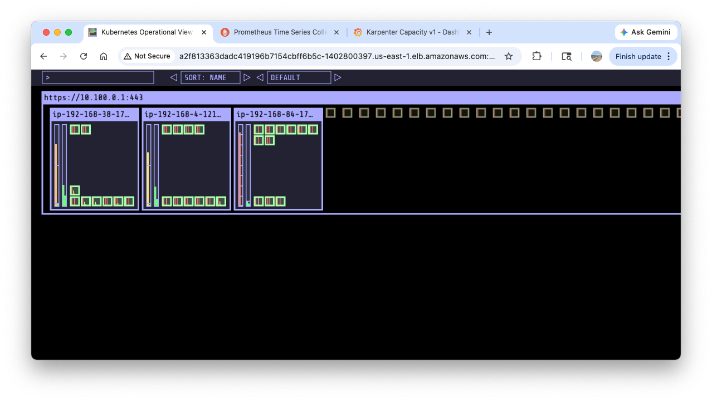
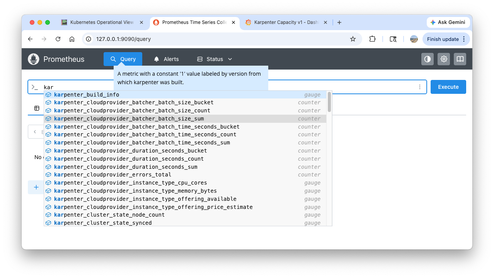

Karpenter
Karpenter is an open-source, flexible, high-performance Kubernetes node provisioner. It helps improve application availability and cluster efficiency by rapidly launching right-sized computing resources in response to changing application load. Unlike the traditional Cluster Autoscaler, Karpenter works directly with the cloud provider's fleet (e.g., Amazon EC2) to provision nodes without the need for pre-configured node groups, significantly reducing scheduling latency and infrastructure overhead.
The following guide is an abbreviated version of Getting Started with Karpenter
1. Install utilities
Install these tools before proceeding:
- AWS CLI: configure the AWS CLI with a user that has sufficient privileges to create an EKS cluster
kubectl- the Kubernetes CLIeksctl(>= v0.202.0) - the CLI for AWS EKShelm- the package manager for Kuberneteseks-node-view
2. Set environment variables
export KARPENTER_NAMESPACE="kube-system"
export KARPENTER_VERSION="1.10.0"
export K8S_VERSION="1.34"
export AWS_PARTITION="aws" # if you are not using standard partitions, you may need to configure to aws-cn / aws-us-gov
export CLUSTER_NAME="seyoung-karpenter-demo" # ${USER}-karpenter-demo
export AWS_DEFAULT_REGION="us-east-1"
export AWS_ACCOUNT_ID="$(aws sts get-caller-identity --query Account --output text)"
export TEMPOUT="$(mktemp)"
export ALIAS_VERSION="$(aws ssm get-parameter --name "/aws/service/eks/optimized-ami/${K8S_VERSION}/amazon-linux-2023/x86_64/standard/recommended/image_id" --query Parameter.Value | xargs aws ec2 describe-images --query 'Images[0].Name' --image-ids | sed -r 's/^.*(v[[:digit:]]+).*$/\1/')"
# final check
echo "${KARPENTER_NAMESPACE}" "${KARPENTER_VERSION}" "${K8S_VERSION}" "${CLUSTER_NAME}" "${AWS_DEFAULT_REGION}" "${AWS_ACCOUNT_ID}" "${TEMPOUT}" "${ALIAS_VERSION}"
3. Create a Cluster
curl -fsSL https://raw.githubusercontent.com/aws/karpenter-provider-aws/v"${KARPENTER_VERSION}"/website/content/en/preview/getting-started/getting-started-with-karpenter/cloudformation.yaml > "${TEMPOUT}" \
&& aws cloudformation deploy \
--stack-name "Karpenter-${CLUSTER_NAME}" \
--template-file "${TEMPOUT}" \
--capabilities CAPABILITY_NAMED_IAM \
--parameter-overrides "ClusterName=${CLUSTER_NAME}"
The above command creates a CloudFormation stack equipped with prerequisite resources to run Karpenter.
{kind=link}
eksctl create cluster -f - <<EOF
---
apiVersion: eksctl.io/v1alpha5
kind: ClusterConfig
metadata:
name: ${CLUSTER_NAME}
region: ${AWS_DEFAULT_REGION}
version: "${K8S_VERSION}"
tags:
karpenter.sh/discovery: ${CLUSTER_NAME}
iam:
withOIDC: true
podIdentityAssociations:
- namespace: "${KARPENTER_NAMESPACE}"
serviceAccountName: karpenter
roleName: ${CLUSTER_NAME}-karpenter
permissionPolicyARNs:
- arn:${AWS_PARTITION}:iam::${AWS_ACCOUNT_ID}:policy/KarpenterControllerNodeLifecyclePolicy-${CLUSTER_NAME}
- arn:${AWS_PARTITION}:iam::${AWS_ACCOUNT_ID}:policy/KarpenterControllerIAMIntegrationPolicy-${CLUSTER_NAME}
- arn:${AWS_PARTITION}:iam::${AWS_ACCOUNT_ID}:policy/KarpenterControllerEKSIntegrationPolicy-${CLUSTER_NAME}
- arn:${AWS_PARTITION}:iam::${AWS_ACCOUNT_ID}:policy/KarpenterControllerInterruptionPolicy-${CLUSTER_NAME}
- arn:${AWS_PARTITION}:iam::${AWS_ACCOUNT_ID}:policy/KarpenterControllerResourceDiscoveryPolicy-${CLUSTER_NAME}
iamIdentityMappings:
- arn: "arn:${AWS_PARTITION}:iam::${AWS_ACCOUNT_ID}:role/KarpenterNodeRole-${CLUSTER_NAME}"
username: system:node:{{EC2PrivateDNSName}}
groups:
- system:bootstrappers
- system:nodes
## If you intend to run Windows workloads, the kube-proxy group should be specified.
# For more information, see https://github.com/aws/karpenter/issues/5099.
# - eks:kube-proxy-windows
managedNodeGroups:
- instanceType: m5.large
amiFamily: AmazonLinux2023
name: ${CLUSTER_NAME}-ng
desiredCapacity: 2
minSize: 1
maxSize: 10
addons:
- name: eks-pod-identity-agent
EOF
eksctl get cluster
eksctl get nodegroup --cluster $CLUSTER_NAME
eksctl get iamidentitymapping --cluster $CLUSTER_NAME
eksctl get iamserviceaccount --cluster $CLUSTER_NAME
eksctl get addon --cluster $CLUSTER_NAME
kubectl ctx # (1)!
kubectl config rename-context "admin@seyoung-karpenter-demo.us-east-1.eksctl.io" "karpenter-demo" # (2)!
 choose
choose admin@seyoung-karpenter-demo.us-east-1.eksctl.io-
Context "admin@seyoung-karpenter-demo.us-east-1.eksctl.io" renamed to "karpenter-demo".
kubectl ns default
kubectl cluster-info
kubectl get node --label-columns=node.kubernetes.io/instance-type,eks.amazonaws.com/capacityType,topology.kubernetes.io/zone
kubectl get pod -n kube-system -owide
kubectl get pdb -A
kubectl describe cm -n kube-system aws-auth
helm repo add geek-cookbook https://geek-cookbook.github.io/charts/
helm install kube-ops-view geek-cookbook/kube-ops-view --version 1.2.2 --set service.main.type=LoadBalancer --set env.TZ="America/New_York" --namespace kube-system
echo -e "http://$(kubectl get svc -n kube-system kube-ops-view -o jsonpath="{.status.loadBalancer.ingress[0].hostname}"):8080/#scale=1.5"
open "http://$(kubectl get svc -n kube-system kube-ops-view -o jsonpath="{.status.loadBalancer.ingress[0].hostname}"):8080/#scale=1.5"
It may take a few miniutes to be able to access the kube-ops-view UI.
{kind=link}
4. Install Karpenter
Logout of helm registry to perform an unauthenticated pull against the public ECR repository.
export CLUSTER_ENDPOINT="$(aws eks describe-cluster --name "${CLUSTER_NAME}" --query "cluster.endpoint" --output text)"
export KARPENTER_IAM_ROLE_ARN="arn:${AWS_PARTITION}:iam::${AWS_ACCOUNT_ID}:role/${CLUSTER_NAME}-karpenter"
echo "${CLUSTER_ENDPOINT} ${KARPENTER_IAM_ROLE_ARN}"
``` bash title="Install Karpenter"
helm upgrade --install karpenter oci://public.ecr.aws/karpenter/karpenter --version "${KARPENTER_VERSION}" --namespace "${KARPENTER_NAMESPACE}" --create-namespace \
--set "settings.clusterName=${CLUSTER_NAME}" \
--set "settings.interruptionQueue=${CLUSTER_NAME}" \
--set controller.resources.requests.cpu=1 \
--set controller.resources.requests.memory=1Gi \
--set controller.resources.limits.cpu=1 \
--set controller.resources.limits.memory=1Gi \
--wait
helm list -n kube-system # (1)!
kubectl get all -n $KARPENTER_NAMESPACE
kubectl get crd | grep karpenter # (2)!
5. Install Prometheus/Grafana
Below steps come from Monitoring with Grafana (optional)
helm repo add grafana-charts https://grafana.github.io/helm-charts
helm repo add prometheus-community https://prometheus-community.github.io/helm-charts
helm repo update
kubectl create namespace monitoring
curl -fsSL https://raw.githubusercontent.com/aws/karpenter-provider-aws/v"${KARPENTER_VERSION}"/website/content/en/preview/getting-started/getting-started-with-karpenter/prometheus-values.yaml | envsubst | tee prometheus-values.yaml
helm install --namespace monitoring prometheus prometheus-community/prometheus --values prometheus-values.yaml # (1)!
extraScrapeConfigs: |
- job_name: karpenter
kubernetes_sd_configs:
- role: endpoints
namespaces:
names:
- kube-system
relabel_configs:
- source_labels:
- __meta_kubernetes_endpoints_name
- __meta_kubernetes_endpoint_port_name
action: keep
regex: karpenter;http-metrics
-
alertmanager: persistentVolume: enabled: false server: fullnameOverride: prometheus-server persistentVolume: enabled: false extraScrapeConfigs: | - job_name: karpenter kubernetes_sd_configs: - role: endpoints namespaces: names: - kube-system relabel_configs: - source_labels: - __meta_kubernetes_endpoints_name - __meta_kubernetes_endpoint_port_name action: keep regex: karpenter;http-metrics
kubectl delete sts -n monitoring prometheus-alertmanager
kubectl port-forward --namespace monitoring svc/prometheus-server 9090:80 &
open http://127.0.0.1:9090
{kind=link}
curl -fsSL https://raw.githubusercontent.com/aws/karpenter-provider-aws/v"${KARPENTER_VERSION}"/website/content/en/preview/getting-started/getting-started-with-karpenter/grafana-values.yaml | tee grafana-values.yaml
helm install --namespace monitoring grafana grafana-charts/grafana --values grafana-values.yaml # (1)!
-
datasources: datasources.yaml: apiVersion: 1 datasources: - name: Prometheus type: prometheus version: 1 url: http://prometheus-server:80 access: proxy dashboardProviders: dashboardproviders.yaml: apiVersion: 1 providers: - name: 'default' orgId: 1 folder: '' type: file disableDeletion: false editable: true options: path: /var/lib/grafana/dashboards/default dashboards: default: capacity-dashboard: url: https://karpenter.sh/preview/getting-started/getting-started-with-karpenter/karpenter-capacity-dashboard.json performance-dashboard: url: https://karpenter.sh/preview/getting-started/getting-started-with-karpenter/karpenter-performance-dashboard.json
kubectl get secret --namespace monitoring grafana -o jsonpath="{.data.admin-password}" | base64 --decode ; echo
kubectl port-forward --namespace monitoring svc/grafana 3000:80 &
open http://127.0.0.1:3000
{kind=link}
6. Create NodePool (ex-Provisioner)

https://karpenter.sh/docs/concepts/nodeclaims/
Karpenter interacts with NodeClaims and related components when creating a node:
- Watches for pods and monitors
NodePoolsandNodeClasses. - Computes the shape and size of a
NodeClaim(orNodeClaims) to create in the cluster to fit the set of pods from step 1. - Creates the
NodeClaimobject in the cluster. - Finds the new
NodeClaimand translates it into an API call to create a cloud provider instance, logging the response of the API call. - Karpenter watches for the instance to register itself with the cluster as a node, and updates the node's labels, annotations, taints, owner refs, and finalizer to match what was defined in the NodePool and NodeClaim. Once this step is completed, Karpenter will remove the karpenter.sh/unregistered taint from the Node.
- Karpenter continues to watch the node, waiting until the node becomes ready, has all its startup taints removed, and has all requested resources registered on the node.
cat <<EOF | envsubst | kubectl apply -f -
apiVersion: karpenter.sh/v1
kind: NodePool
metadata:
name: default
spec:
template:
spec:
requirements:
- key: kubernetes.io/arch
operator: In
values: ["amd64"]
- key: kubernetes.io/os
operator: In
values: ["linux"]
- key: karpenter.sh/capacity-type
operator: In
values: ["on-demand"]
- key: karpenter.k8s.aws/instance-category
operator: In
values: ["c", "m", "r"]
- key: karpenter.k8s.aws/instance-generation
operator: Gt
values: ["2"]
nodeClassRef:
group: karpenter.k8s.aws
kind: EC2NodeClass
name: default
expireAfter: 720h # 30 * 24h = 720h
limits:
cpu: 1000
disruption:
consolidationPolicy: WhenEmptyOrUnderutilized
consolidateAfter: 1m
---
apiVersion: karpenter.k8s.aws/v1
kind: EC2NodeClass
metadata:
name: default
spec:
role: "KarpenterNodeRole-${CLUSTER_NAME}" # replace with your cluster name
amiSelectorTerms:
- alias: "al2023@${ALIAS_VERSION}" # ex) al2023@latest
subnetSelectorTerms:
- tags:
karpenter.sh/discovery: "${CLUSTER_NAME}" # replace with your cluster name
securityGroupSelectorTerms:
- tags:
karpenter.sh/discovery: "${CLUSTER_NAME}" # replace with your cluster name
EOF
7. Scale up
eks-node-viewer --resources cpu,memory
eks-node-viewer --resources cpu,memory --node-selector "karpenter.sh/registered=true" --extra-labels eks-node-viewer/node-age
{kind=link}
cat <<EOF | kubectl apply -f -
apiVersion: apps/v1
kind: Deployment
metadata:
name: inflate
spec:
replicas: 0
selector:
matchLabels:
app: inflate
template:
metadata:
labels:
app: inflate
spec:
terminationGracePeriodSeconds: 0
securityContext:
runAsUser: 1000
runAsGroup: 3000
fsGroup: 2000
containers:
- name: inflate
image: public.ecr.aws/eks-distro/kubernetes/pause:3.7
resources:
requests:
cpu: 1
securityContext:
allowPrivilegeEscalation: false
EOF
kubectl get pod
kubectl scale deployment inflate --replicas 5
Note
requests: cpu: 1 ensures a pod requires 1 CPU.
kubectl logs -f -n "${KARPENTER_NAMESPACE}" -l app.kubernetes.io/name=karpenter -c controller
kubectl logs -f -n "${KARPENTER_NAMESPACE}" -l app.kubernetes.io/name=karpenter -c controller | jq '.'
kubectl logs -n "${KARPENTER_NAMESPACE}" -l app.kubernetes.io/name=karpenter -c controller | grep 'launched nodeclaim' | jq '.' # (1)!
-
{ "level": "INFO", "time": "2026-04-06T02:37:30.607Z", "logger": "controller", "message": "launched nodeclaim", "commit": "d80cb86", "controller": "nodeclaim.lifecycle", "controllerGroup": "karpenter.sh", "controllerKind": "NodeClaim", "NodeClaim": { "name": "default-rjglh" }, "namespace": "", "name": "default-rjglh", "reconcileID": "f3c05d35-d464-4db6-a286-1c0597f8ad38", "provider-id": "aws:///us-east-1c/i-024ab17cc5944047a", "instance-type": "c6a.2xlarge", "zone": "us-east-1c", "capacity-type": "on-demand", "allocatable": { "cpu": "7910m", "ephemeral-storage": "17Gi", "memory": "14162Mi", "pods": "58", "vpc.amazonaws.com/pod-eni": "38" } }
- select a node that meets the requirements below.
Requirements: Key: karpenter.k8s.aws/ec2nodeclass Operator: In Values: default Key: node.kubernetes.io/instance-type Operator: In Values: c3.2xlarge c3.4xlarge c3.8xlarge ... ... Key: kubernetes.io/os Operator: In Values: linux Key: karpenter.k8s.aws/instance-category Operator: In Values: c m r Key: karpenter.sh/nodepool Operator: In Values: default Key: kubernetes.io/arch Operator: In Values: amd64 Key: karpenter.k8s.aws/instance-generation Operator: Gte Values: 3 Key: karpenter.sh/capacity-type Operator: In Values: on-demand
kubectl scale deployment inflate --replicas 30
kubectl logs -f -n "${KARPENTER_NAMESPACE}" -l app.kubernetes.io/name=karpenter -c controller | jq '.'
kubectl get nodeclaims # (1)!
kubectl describe nodeclaims # (2)!
kube-ops-view captures the process of provisioning a new node and scheduling pods:
{kind=link}
{kind=link}
{kind=link}
In the CloudTrail page, you can find bunch of CreateFleet event logs. In the below log, we can learn that Karpenter is able to create a node with arn:aws:iam::080403789922:role/seyoung-karpenter-demo-karpenter role and looks for the cheapest node.

Karpenter produces bunch of metrics:

{kind=link}
8. Scale down
kubectl logs -f -n "${KARPENTER_NAMESPACE}" -l app.kubernetes.io/name=karpenter -c controller | jq '.' # (1)!
kubectl get nodeclaims # (2)!
-
{ "level": "INFO", "time": "2026-04-06T03:12:13.364Z", "logger": "controller", "message": "disrupting node(s)", "commit": "d80cb86", "controller": "disruption", "namespace": "", "name": "", "reconcileID": "14e4707c-2821-4b3b-8b37-2705c29fff60", "command": "Empty/4db0fd72-b518-4b88-a69a-b62eb912192b: delete: nodepools=[default]: [ip-192-168-55-28.ec2.internal] (savings: $0.61)", "decision": "delete", "disrupted-node-count": 1, "replacement-node-count": 0, "pod-count": 0, "disrupted-nodes": [ { "Node": { "name": "ip-192-168-55-28.ec2.internal" }, "NodeClaim": { "name": "default-8bq97" }, "capacity-type": "on-demand", "instance-type": "c6a.4xlarge" } ], "replacement-nodes": [] } -
No resources found
Confirm events for the last one hour in the CloudTrail AWS console.
{kind=link}
9. Delete resources
# uninstall Karpenter helm
helm uninstall karpenter --namespace "${KARPENTER_NAMESPACE}"
# remove Service(CLB)
kubectl delete svc -n kube-system kube-ops-view
# remove EC2 Launch Template
aws ec2 describe-launch-templates --filters "Name=tag:karpenter.k8s.aws/cluster,Values=${CLUSTER_NAME}" |
jq -r ".LaunchTemplates[].LaunchTemplateName" |
xargs -I{} aws ec2 delete-launch-template --launch-template-name {}
# remove cluster
eksctl delete cluster --name "${CLUSTER_NAME}"
# remove cloudformation stack
aws cloudformation delete-stack --stack-name "Karpenter-${CLUSTER_NAME}"